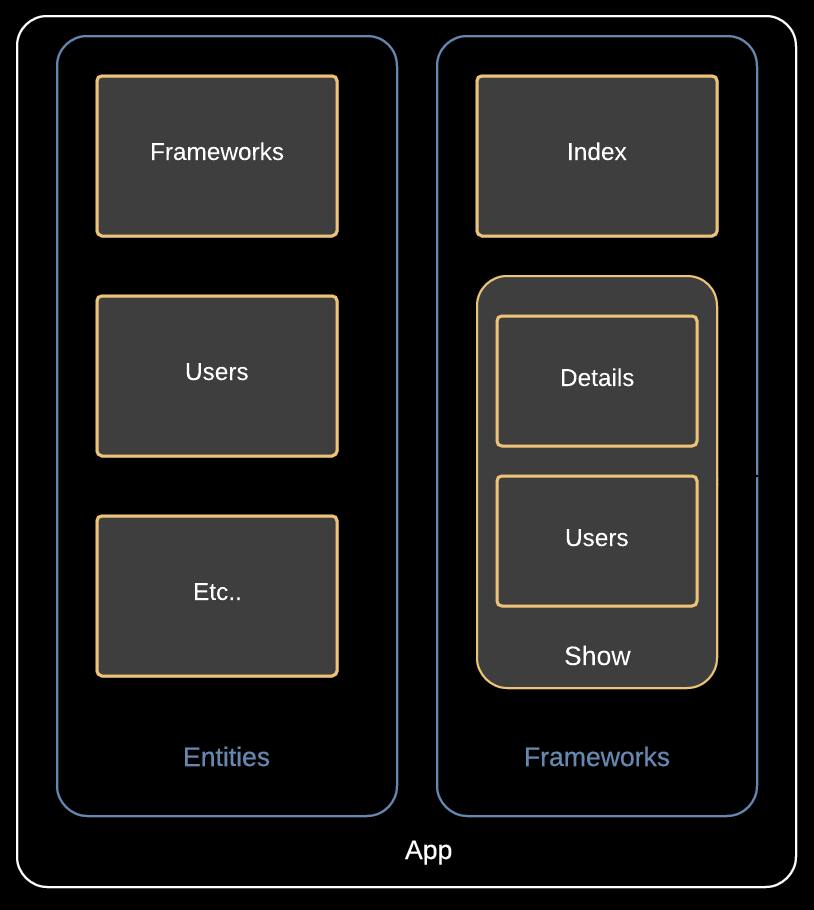

Framework Faceoff
Who am I?
Alan Peabody - Developer @ Agilion
Slides: http://alanpeabody.com/presentations/framework-faceoff-marionette/
Should you use Marionette?
What is Backbone.Marionette?
Backbone.Marionette is a composite application library for Backbone.js that aims to simplify the construction of large scale JavaScript applications.
Emphasis mine
Built on Backbone.js
What is Backbone.js?
- Models (and Collections)
- View (and Template)
- Router
- 17,000+ Stars on Github
- 6.4kb over wire
- Tiny, readable, well documented source
Backbone is event based
- Models trigger Events
- DOM interactions trigger Events
- View manages events
- No automatic bindings
Backbone is great!
Backbone.js is small, flexible, and un-opinionated.
- No surprises.
- Built on the awesome Underscore library.
- Great 3rd party libraries.
Backbone is a pain
Backbone.js is small, flexible, and un-opinionated.
- Decide on (and implement consistently) your own best practices.
- Write your own rendering code. A lot.
- Handle switching between views.
- Handle view clean up.
- Handle event un-binding.
- Organize your app in some sane way.
Backbone.Marionette
- Views & View Managers (Layouts, Regions)
- Component based Modules
- Eventing Tools
Marionette Views & View Management
Marionette.View
- Inherits from Backbone.view.
- Adds best practices for
- Templating
- Rendering
- Event Binding & Unbinding
- Closing
- Prototype of every other Marionette view type.
Marionette.ItemView
- Renders one model.
- Used for forms, display, listing items.
- Can be bound to re-render on model events such as change.
Marionette.ItemView
<div id='app'></div>
<script id='item-view' type='text/html'>
<h2><%= name %></h2>
<p><%= tagline %></p>
</script>
var Framework = Backbone.Model.extend({});
var FrameworkView = Backbone.Marionette.ItemView.extend({
template: '#item-view',
modelEvents: { 'change' : 'render' }
});
var framework = new Framework({name: 'marionette.js'});
var view = new FrameworkView({model: framework});
$('#app').html(view.render().$el);
Marionette.CompositeView
- Renders an optional Model and a Collection, renders each Collection item in an Item view.
- Great for Model + Related Collection and Leaf view structures.
- Automatically keeps dom in sync with Collection.
Marionette.CompositeView
<script id='frames-view' type='text/html'>
<h1>Frameworks:</h1>
<div class='frameworks'></div>
</script>
var Frameworks = Backbone.Collection.extend({model: Framework});
var FrameworksView = Backbone.Marionette.CompositeView.extend({
template: '#frames-view',
itemView: FrameworkView,
itemViewContainer: '.frameworks'
});
var frameworks = new Frameworks([framework]);
var compView = new FrameworksView({collection: frameworks});
$('#app').html(compView.render().$el);
Marionette.Layout
- A Template, a view, and a Marionette.RegionManager.
- Manages opening and closing of nested views.
- Can be nested itself.
Marionette.Layout
<script id='frames-layout' type='text/html'>
<div id='menu'></div>
<div id='main'></div>
</script>
var FrameworksLayout = Backbone.Marionette.layer.extend({
template: '#frames-layout',
regions: {
main: '#main',
menu: '#menu'
}
});
var layout = new FrameworksLayout();
$('#app').html(layout.render().$el);
layout.main.show(compView);
layout.main.close();
Managing Large Applications
Composite Architexture

- One Application
- One Module Per Model/Collection
- One Module Per Section
- One Module per Screen
- One Module per Component
- One Module per Screen
- Event based interaction.
Backbone.Wreqr
Event Aggregator
var vent = new Backbone.Wreqr.EventAggregator();
vent.on('foo', function() {
console.log('foo event');
});
vent.trigger('foo');
RequestResponse
var reqres = new Backbone.Wreqr.RequestResponse();
reqres.setHandler('foo', function() {
return 'foo requested. this is the response';
});
var result = reqres.request('foo');
console.log(result);
Marionette.Application
- Top level object
- Includes Event Aggregator
- Includes Request/Response
- Includes Region Manager
- Responsible for starting your app
Marionette.Application
var App = new Backbone.Marionette.Application();
// No Template, uses HTML as rendered (by server).
App.addRegions({
app: '#app',
nav: '#nav'
});
App.addInitializer(function(options) {
Backbone.History.Start();
App.vent('history:started');
App.reqres.setHandler('foo', function() { return options.foo; });
});
App.start({foo: 'bar'});
Marionette.Application.Module
- Isolate and organize your code
- Provides tool for encapsulation of state and logic
- Inherits from Event Aggregator
- Optimized for Submodule patterns
Marionette.Application.Module
App.module('Entities.Frameworks', function(Module, App) {
var Model = Backbone.Model.extend({});
var Collection = Backbone.Collection.extend({model: Model});
// Manage loaded state (fetch logic omitted here);
var collection = new Collection();
App.reqres.setHandler('framework:collection', function() {
return collection;
});
App.reqres.setHandler('framework:model', function(id) {
return collection.get(id);
});
});
Marionette.Application.Module
App.module('Frameworks.Show', function(Show, App) {
this.startWithParent = false;
var ItemView = Backbone.Marionette.ItemView.extend({ template: '#item-view' });
var CompositeView = Backbone.Marionette.CompositeView.extend({
template: '#frames-view',
itemView: FrameworkView,
itemViewContainer: '.frameworks'
});
this.on('start', function() {
var collection = App.reqres.request('framework:collection');
var view = new CompositeView({collection: collection});
App.main.show(view);
});
});Marionette VS The Competition
- Super explicit, super simple.
- Focused on OO concepts such as composition and de-coupling.
- Manual binding of data and events.
- Must manage routes and state explicity.
- Much more straight forward than Ember.js.
- More model focused than DOM specific frameworks like React.
- More code required than Ember or Angular, but much less then Backbone.
Should you use Marionette?
Maybe.
Resources
Thank you!
Alan Peabody
- Twitter: @alanpeabody
- Github: alanpeabody
- Slides: http://alanpeabody.com/presentations/framework-faceoff-marionette/